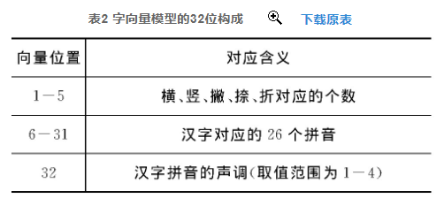

系列文章
这个是系列博客, 所有文章链接都列在这里, 并持续更新中。
中文的词都是由字构成的, 所以有一些研究人员更关心如何用向量来表示一个字, 比如<基于汉字固有属性的中文字向量方法研究>, 该方法结合中文汉字的构词和拼音属性,将中文汉字映射为一个仅32维的空间向量,最后使用卷积神经网络进行语义提取并进行相似性计算。实验结果表明,与现有的短文本相似性计算方法相比,该方法在算法性能及准确率上均有较大的提高。
基于笔画的字向量模型
(以下引自论文)
汉字造字法, 即古人所说的“六书”:象形字、会意字、指事字、形声字、转注、假借, 可分为“四体二用”, 其中四体的含义如下。
- (1) 象形字是描摹事物的记录方式, 是世界上最早的文字, 也是最形象、演变至今保存最完好的一种汉字字形。它纯粹利用图形来刻画文字的使用, 而这些文字与所代表的含义在形状上很相像。如“休”字, 像是一个人依偎着一棵树。“山”就像一座大山的样子, 在一群山的中间有一座高高的山峰。
- (2) 会意字是指两个或两个以上的独体字根据其意思合成的一个字。
- (3) 指事字是一种抽象的造字方法, 当没有或不方便用具体形象刻画的时候就用一种抽象的符号来表示。
- (4) 形声字是在象形字、会意字、指事字三种形式的基础上形成的。它是两个文或字复合成体, 其中一个文或字表示事物的类别, 而另一个表示事物的读音, 也就是人们通常说的“读音认字认半边”。
另外, 汉字还可以拆分为偏旁和部首, 很多汉字如果具有同一个偏旁, 可能表示同一个意思, 甚至读音也一样。例如, 很多带“扌”的汉字表示为一个动作, 即提、扛、抢、挑等。不仅如此, 根据汉字的结构, 研究发现任何一个汉字都可以分别由横、竖、撇、捺、折的个数线性组合。例如,
1 | 良=2·横+0·竖+1·撇+2·捺+2·折 |
综合以上信息, 本文根据汉字的组成结构和其拼音结构, 提出一种新的字向量模型, 把汉字完全映射到欧氏空间。其中, 每个汉字由一个长度仅为32位的向量组成。相比于One-hot的向量表示方法, 基于笔画的字向量具有非常低的维度, 详见表2。

字笔画库
为了提取文字的笔画, 我们需要一个字表。 下面是我从网上下载到的一个包含笔画的字表, 这是一个文本文件, 我们需要将文件读取处理, 进行格式整理, 然后写入到一个字典里, 这样方便我们后面提取字的笔画。
1 | 汉字 全拼 五笔 郑码 UNICODE GBK 笔画数 部首 笔顺编号 |
解析笔画
这个笔画文件有很多列数据, 实际上我们用到的就是第一列和最后一列。而除了第2/3/4/5行之外, 我们可以当它是一个csv文件。下面我们从这个文件中提取一个字典, 从汉字到笔顺编号的映射字典。下面就是一些基本的文本处理的代码。
注意笔顺编号的12345就对应了横竖撇捺折。
1 | from pathlib import Path |
字典长度: 20902
求笔画向量
我们先求得向量的前五位, 也就是笔画统计构成的向量。
1 | from collections import Counter |
我 的向量是: [2. 1. 2. 1. 1.]
求拼音向量
我们这一步要求字向量的6-32位元素数字构成的向量, 姑且叫他拼音向量, 因为在上一篇文章中(文本向量系列-如何基于拼音构建字向量), 我们使用了模块pypinyin进行了汉字转拼音, 但是不太符合今天的需求, 我们需要将声调和字母分离, 还好, 这个模块支持我们这样做。
1 | from pypinyin import pinyin |
['wo3', 'men']
1 | def zimu_vec(zi): |
[0. 0. 0. 0. 0. 0. 0. 0. 0. 0. 0. 0. 0. 0. 1. 0. 0. 0. 0. 0. 0. 0. 1. 0.
0. 0. 3.]
最后, 拼接笔画向量和拼音向量
1 | def vector(zi): |
[2. 1. 2. 1. 1. 0. 0. 0. 0. 0. 0. 0. 0. 0. 0. 0. 0. 0. 0. 1. 0. 0. 0. 0.
0. 0. 0. 1. 0. 0. 0. 3.]
总结:
(摘自论文)
中文短文本在如今高速发展的互联网应用中变得日趋重要, 如何从海量短文本消息中挖掘出有价值的信息, 已成为当前中文自然语言处理中非常重要且具有挑战性的课题。然而, 采用传统的长文本处理方法进行分析往往得不到很好的效果, 其根本原因在于中文短文本消息的语法及其语义的稀疏性。基于此, 该文提出一种基于汉字笔画属性的中文字向量表示方法, 并结合深度学习对短文本消息进行相似性计算。该方法结合中文汉字的构词和拼音属性, 将中文汉字映射为一个仅32维的空间向量, 最后使用卷积神经网络进行语义提取并进行相似性计算。实验结果表明, 与现有的短文本相似性计算方法相比, 该方法在算法性能及准确率上均有较大的提高。
注意
本文由jupyter notebook转换而来, 您可以在这里下载notebook
有问题可以直接在下方留言
或者给我发邮件675495787[at]qq.com
请记住我的网址: mlln.cn 或者 jupyter.cn